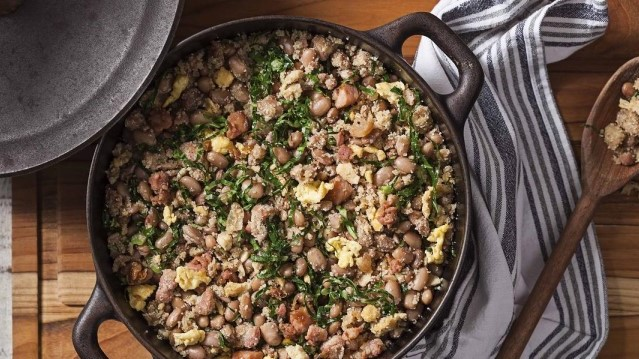

Feijão Tropeiro

Ingredientes
- 2 xícaras de chá de feijão cozido
- 4 ovos cozidos picados
- 2 colheres de bacon picado
- 1 cubo de caldo de bacon
- Rodelas de linguiça calabresa a gosto
- 2 cebolas picadas
- 6 dentes de alhos amassados
- 1 e 1/2 colher de farinha de mandioca crua
- Cheiro-verde, sal e pimenta a gosto
Modo de Preparo
- Frite o bacon e a linguiça numa frigideira e deixe separado.
- Refogue o alho e a cebola e em seguida adicione o feijão e o caldo de bacon.
- Adicione o bacon e a linguiça ao feijão, em seguida adicione a farinha de mandioca e os ovos cozidos picados.
- Adicione cheiro-verde, sal e pimenta ao seu gosto. Depois é só servir.
Voltar para a lista de receitas